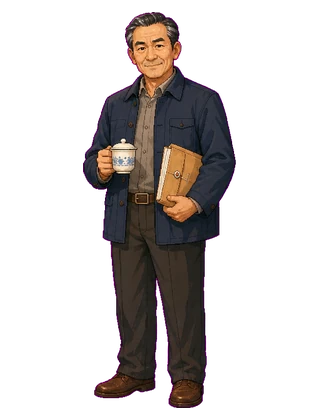
赵建国
常务副县长｜56岁｜本土派老干部
班子掣肘者，贪腐线和环评隐瞒关键人物
深色行政夹克，手持茶杯或文件，面上和气、眼神精明
按最终剧本人物体系整理：23 位完整人物、2 位特殊角色、5 位功能配角。此页用于美术审看与前端接入核对。

常务副县长｜56岁｜本土派老干部
班子掣肘者，贪腐线和环评隐瞒关键人物
深色行政夹克，手持茶杯或文件，面上和气、眼神精明
县长秘书｜36岁｜办公室出身
玩家身边的信息漏斗和风险镜子
浅灰衬衫，抱笔记本/文件夹，谨慎克制
县财政局长｜51岁｜账本型干部
预算、程序与财政底线的闸口
眼镜，深色马甲或规整衬衫，拿硬壳账本
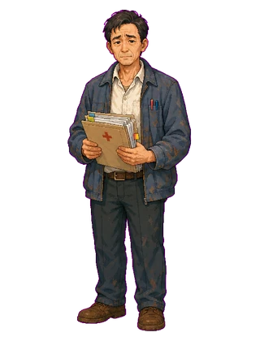
县卫健局副局长｜48岁｜医疗兜底递交者
血铅名册与医疗兜底线的关键递交者
白衬衫加旧外套，怀抱体检名册，疲惫焦虑
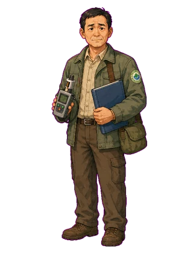
县环保站站长｜48岁｜环保台账守门人
环保台账、监测点位变更与隐瞒线的闸门
褪色环保站工装，胸牌，旧监测仪/台账
宏达化工法人代表｜48岁｜企业利益代言人
企业利益和行贿线主动出手者
西装革履，名片夹或烟盒，笑容圆滑
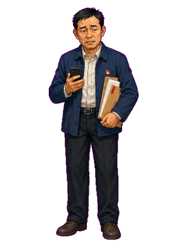
渡口镇党委书记｜45岁｜夹心层干部
基层执行主力，承接县里与村里的双重压力
镇干部夹克，手拿手机和材料，疲惫有压力
市委巡察组组长｜50岁左右｜上级监督压力
人事线执棋人，巡察与问责压力来源
深色正装，手持卷宗，站姿笔直，冷面少表情
市生态环境局副局长｜55岁｜环保验收判词
环保验收判词，事实函数
风衣或环保系统夹克，采样瓶/报告夹，沉稳不接烟
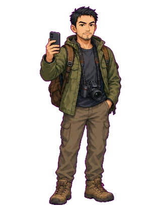
独立调查记者｜30多岁｜舆论导火索
偷排视频与体检单持有者，推动舆论压力
户外夹克，背包，相机/手机，眼神锐利
县电视台记者｜30多岁｜官方舆论阀门
官方舆论阀门，也可能倒向事实与陈默
利落职业装，话筒或采访本，笑容克制
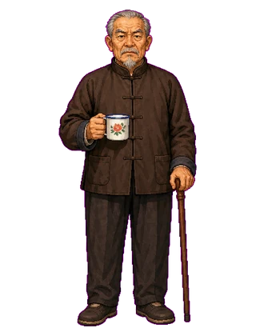
村支书兼主任｜67岁｜周氏族长
宗族核心、村庄阻力与村账黑洞
深棕夹克或老式干部装，茶缸/手杖，族长气场
村会计｜40岁｜散姓会计
私账和行贿细节钥匙，最不稳定的倒戈者
瘦小，旧衬衫，夹账本或钥匙，眼神游移
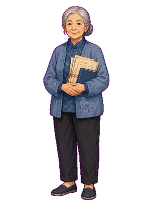
退休教师｜60多岁｜村民代表
散户意见领袖，公平补偿和祖坟诉求的关键人物
灰蓝布衫或针织开衫，银发，手拿旧契约/教案
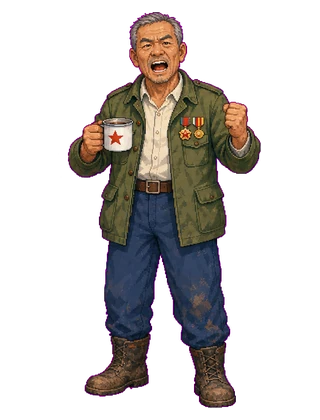
退伍军人｜61岁｜钉子户
血铅旧案引信，强硬谈判对象
旧军绿色外套，短硬白发，军章/搪瓷杯，拍桌气势
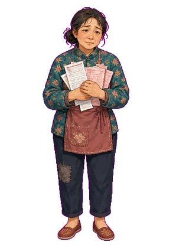
困难户｜40多岁｜低保户、残疾人家属
弱势户试金石，牵动民心和舆情
旧花布衣、围裙，攥药单/低保证，怯弱疲惫
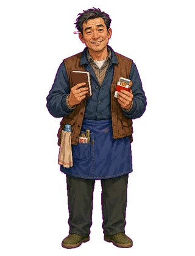
小卖部老板｜40多岁｜流言放大器
从众效应、攀比心理和村内流言的放大器
围裙或旧夹克，账本/香烟盒，圆滑小老板感
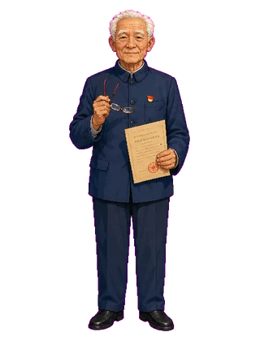
退休老党员｜73岁｜体制内关联户
党员带头样板，程序合规风向
深蓝中山装，党员徽章，老花镜/协议，稳重体面
正文常称“宁老”，与宁德海为同一人。
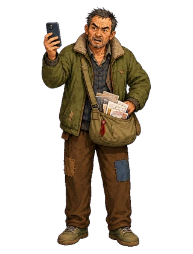
老上访户｜50多岁｜仇怨户
历史瑕疵与舆情雷点
旧棉袄或皱夹克，手机录像，斜挎材料包，脸色尖刻
返乡青年｜30岁上下｜摇摆户
网络出口、年轻一代代表
休闲卫衣/工装裤，智能手机、耳机或快递袋
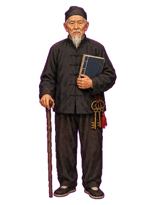
周氏宗族执事｜71岁｜祖坟线闸门
祖坟与祠堂三户的闸门
黑布衫，腰挂祠堂钥匙，族谱/木杖，古板庄重
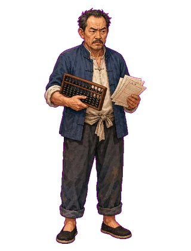
周氏族人｜54岁｜算账派
明账服人的触发者，刘三账线引信
劳动布衣，算盘/皱纸账单，眼神较真
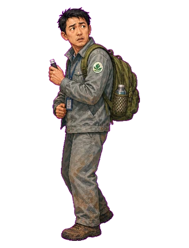
县环保站职工｜39岁｜柳林村人
偷排优盘持有者，隐瞒线增量
旧环保工装，背包，攥U盘，紧张回头
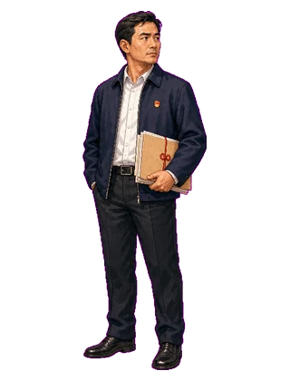
新任县长｜42岁｜玩家身份
玩家代入位；用于档案封面、教程剪影或关系图中心
干净白衬衫或深色行政外套，背影/半侧脸，避免固定玩家性格
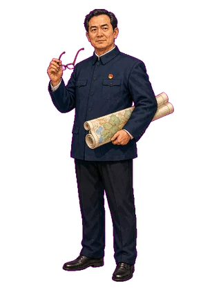
县委书记｜52岁｜云溪权力中心
常委会轴心与玩家上级，给玩家划线的人
深色书记夹克，老花镜，县域地图前的压迫感
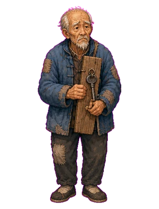
柳林村独身老汉｜老人｜最后一户
争的是祖屋与根；最后一户兜底节点
干瘦老人，旧棉袄，抱门框或旧屋钥匙
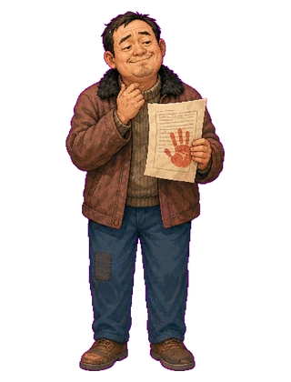
柳林村早签户｜中年｜早期高补偿源头
旧政策高补偿源头，需要重签讲清
略得意又心虚，手拿早期协议
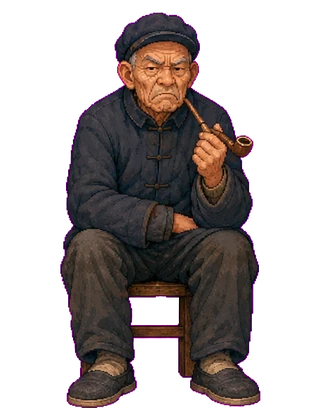
铁心不签的老人｜老人｜沉默犟户
被吴秀英劝松的犟户
烟锅、布鞋、沉默坐姿
县卫生院防疫科｜青年｜血铅传真递送者
第一时间递出血铅传真，推动危机转入明线
白大褂/防疫科工牌，抱传真纸奔跑
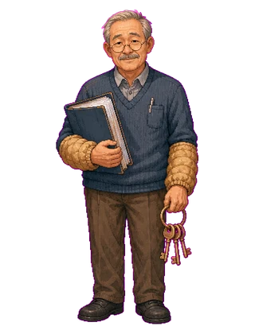
信访办卷宗室老同志｜快退休｜卷宗守门人
卷宗问到就说，不主动揭
袖套，守档案柜，快退休老干部气质